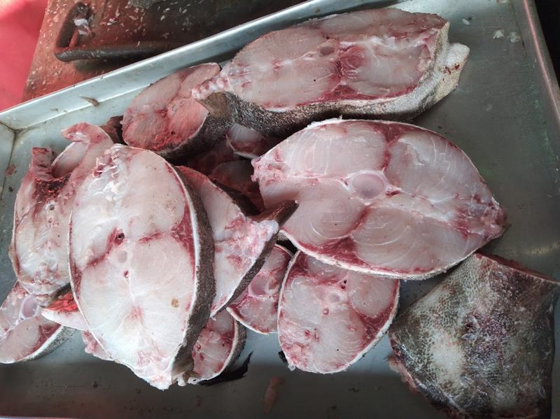

04:30
It is still dark
The sea is black and the sand is cold. Juma pushes his mtumbwi into the water. He carved that boat himself, from a mango tree, and it has carried him for eleven years.
One morning, one fish, and the whole journey in between.
Babu SamakiSit down and I will tell you how a fish reaches your table. It begins in the dark, long before you wake up.
The sea is black and the sand is cold. Juma pushes his mtumbwi into the water. He carved that boat himself, from a mango tree, and it has carried him for eleven years.
He paddles past the reef to where the water turns from green to blue. Here the sea is very deep. Big fish come close to shore at Shimoni — that is why people have fished here for hundreds of years.

He drops his line and waits. Some mornings the fish come quickly. Some mornings they do not come at all, and he goes home with nothing. That is fishing, and every fisherman knows it.
The boat comes back onto the sand. Nguru today, and changu, and one octopus who was hiding in a hole in the coral and was not hiding well enough.

We meet the boats on the beach and buy the fish the same morning. Not from a shop, not from a lorry — from the man who caught it, standing on the sand with his feet wet.

Fish does not spoil because of time. It spoils because of warmth. So we clean it and pack it in ice within hours, in a white box that keeps the cold in for three days.
The box goes on a bus or a rider. Somebody in Mombasa will eat this tonight. Somebody in Nakuru will eat it tomorrow, and it will still be cold when it reaches them.

A family sits down. The fish on the plate came out of the Indian Ocean this morning, and a man named Juma pulled it from the water before the sun came up. Most people never know that part. Now you do.
Most fish that people buy has no story at all. Nobody knows which boat, which morning, or whose hands. We think a child who knows where their supper came from grows into an adult who cares what happens to the sea it came from.